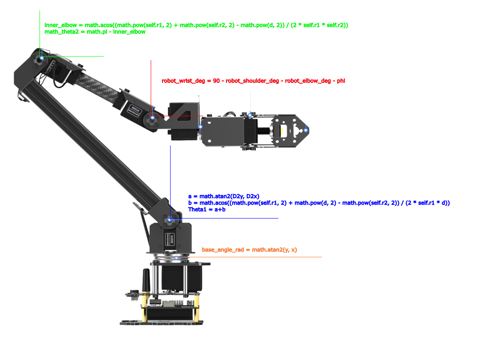

RoArm Inverse Kinematics Solver
Python & C++17 • Cartesian Targeting • End-Effector Pitch

Project Overview
I developed an inverse kinematics solver that converts a Cartesian target into joint angles for the Waveshare RoArm. The project began as an open-source Python library for the M2 and M3 arms, and I have since written a C++17 implementation for the RoArm M3 Pro in our AVC ARKOV rover project.
The M3 solver accepts an XYZ position and an end-effector pitch angle, φ. It calculates base, shoulder, elbow, and wrist-bend angles so the arm can reach toward a target with a specified tool orientation. Coordinates and link lengths use inches; the public joint-angle and φ inputs use degrees.
From Python to C++ for AVC
The C++ solver lives in ARKOV/manipulation/roarm_ik.cpp and roarm_ik.hh within the AVC repository. I separated the arm geometry from the serial-control layer: ik_solver calculates targets, while my roarm_cpp_lite library provides the C++ interface to the hardware.
- Calculate without moving:
generate_ik(phi, x, y, z)returns an optional six-joint vector and can run without a connected controller. Invalid link lengths and wrist-center distances outside the two-link reach returnstd::nullopt. - Cartesian movement:
move_to_xyzsends the calculated joint angles through the controller, with an optional wait for arrival. - Feedback handling: The arrival check reads cached feedback, verifies the packet type and available joint fields, converts reported radians into degrees, and compares the first four joints against a tolerance with a timeout.
- Line interpolation:
draw_linesamples positions between two XYZ endpoints while keeping φ fixed. The current implementation skips samples that do not produce a geometric solution.
This extends the Python project's geometric approach into the new AVC codebase. The solver checks modeled reach; joint limits, collisions, and complete rover integration require separate validation.
C++ Solver Example
This example uses the ARKOV solver to calculate angles without opening a serial port or commanding the arm.
#include "roarm_ik.hh"
#include <iostream>
int main() {
// A controller is optional when only calculating angles.
ik_solver solver;
auto angles = solver.generate_ik(0.0, 15.0, 0.0, 10.0);
if (!angles) {
std::cout << "Target outside the modeled workspace.\n";
return 1;
}
for (double angle : *angles) {
std::cout << angle << ' ';
}
}The Mathematics Behind the Movement
Base yaw faces the target in the XY plane. The horizontal distance is then projected into the vertical arm plane:
For the three-link M3 model, I subtract the final link's contribution at the requested pitch to find the wrist center. This is the target the shoulder and elbow must reach:
The law of cosines gives the inner elbow angle. The solver converts the resulting shoulder and elbow geometry into the arm's joint conventions, then sets wrist bend to maintain the requested pitch:
The C++ model currently uses r1 = 10, r2 = 7.5, and r3 = 7 inches. Its geometric reach test requires the wrist-center distance to fall between the difference and sum of the first two link lengths. The inverse-cosine inputs are clamped to handle floating-point rounding.
Python Library & Quick Start
The original Python package, roarm-ik, exposes m2Arm and m3Arm from roarm_ik. It builds on the official Waveshare Python SDK and provides Cartesian movement, angle calculation, and line interpolation.
Install the solver and its underlying SDK:
pip install roarm-ik roarm-sdkfrom roarm_ik import m3Arm
# Link lengths and XYZ coordinates use inches; phi uses degrees.
arm = m3Arm(port="/dev/ttyUSB0", baudrate=115200)
# Calculate joint angles without sending a motion command.
angles = arm.generate_ik(phi=0, x=15, y=0, z=10)
print(angles)
# Send the target and optionally wait for joint feedback.
arm.move_to_xyz(phi=0, x=15, y=0, z=10, wait=True)generate_ik only calculates angles. The final move_to_xyz call commands hardware; the link measurements and target must match the connected arm and workspace.